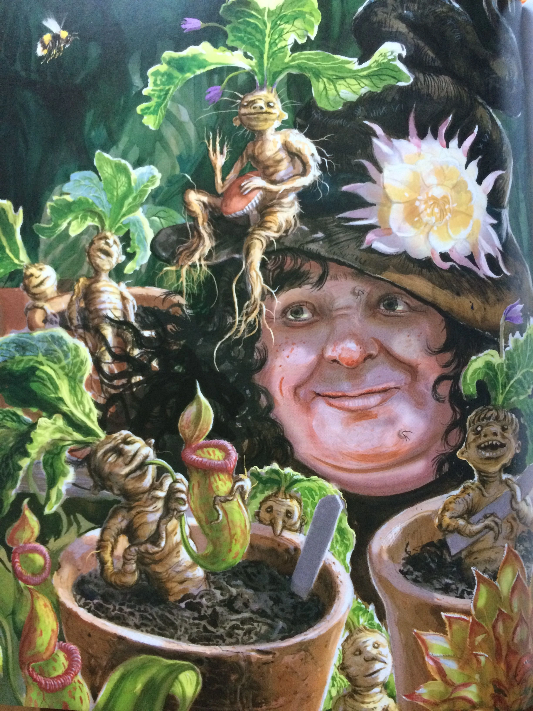

House Hufflepuff
House Hufflepuff, represented by the colors Yellow and Black, whilst having a badger for their mascot. This is the house of hard work and loyalty. Founded by Helga Hufflepuff, considered the teacher amongst the founders. The Sorting Hat sends those who value friendship and loyalty above all else here. Hufflepuff is known for having produced the least dark wizards of any house. The dorms are located in the basement level near the kitchen.
People of house Hufflepuff
House Hufflepuff has had many great people through the years. Such as Hufflepuff's ghost, Fat Friar. Hufflepuff is currently being headed by Professor Sprout, who is known for her Herbology. In the past, Hufflepuff has had amazing students such as Newt Scamander, author of Fantastic Beasts and Where to Find Them. This is the house for those with vast amounts of loyalty and dedication. If you believe in sticking with friends through thick and thin, House Hufflepuff is right for you.
